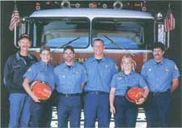
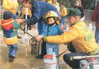
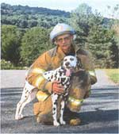

The first thing our 3-year-old son, Don, did when we moved was run right out to the suburban sidewalk in front of our new house and yell, "Hey, kids! Here I am!" Six doors up the street, a young mother scooped up her two small children, went inside and closed the door. Don burst into tears.
Whether you move across town or across the country, as we did, it's not always easy being the new kid on the block. Outside of the handful of people I worked with at my new job, we didn't know anybody in our new home of Emmaus (pronounced E-may-us), Pennsylvania. Then my wife, Melanie, got a part-time job as a newspaper reporter. Her editor, Randall Murray, also was a volunteer firefighter in Emmaus. Thanks to him, we soon got to know almost everyone in the town of 11,000. "Why don't you come to fire practice some Tuesday night, see how you like it?" Randall asked. "We're always looking for volunteers."
So are fire companies all over the country. Most departments don't pay a thing beyond the satisfaction of serving your community. But as emergency calls continue to increase, there are not enough volunteers to keep pace. So to recruit and retain members, more and more departments are offering incentives. Maryland gives firefighters a $3,000 deduction on state taxes. Virginia offers a $400 to $1,000 tax break on a new car. Hourly stipends around the country range from about $5 to as high as $32 in Sedona, Arizona. Other departments provide health insurance, health club memberships, tuition assistance, modest pensions, free utility water and rent-free living at the firehouse. New Jersey gives volunteer firefighters low-interest housing loans. Some Colorado departments offer free skiing. In Indiana, firefighters get free meals while on duty. Volunteers in Sitka, Alaska, get free cable TV.
In Emmaus, we're now on-call paid volunteers. We get $8.75 to $12.75 per hour, based on training, rank and attendance at calls and practice. Three-person crews work shifts that cover 24 hours a day, 365 days a year. It's not a bad little moonlight job. Last year, I earned $3,900. For younger members, it's a good stepping stone to full-time firefighting jobs.
Join the fire department? you ask. Are you nuts? It does not say "Superman" on my long johns!
I'll let you in on a little secret. Firefighters are just ordinary people who, when the need arises, sometimes do extraordinary things, simply because someone has to take action.
There are about 1.1 million firefighters in the United Sates. Three out of four - more than 800,000 in all - are volunteers, according to the National Volunteer Fire Council. The NVFC estimates that volunteer firefighters save this country $37 billion a year. In most communities, volunteers are our first line of defense in emergencies ranging from everyday accidents and fires to natural disasters and terrorist attacks.
The fire department is no longer the good-ol'-boy club it was even a few years ago. Women now serve on many departments across the country. And you don't have to dress up like an astronaut, strap on an air pack and crawl into a burning building to belong to the fire department. After all, there are limits to how many people can be on the end of a hose line. But there is no limit to the other work to do around an emergency scene. You can roll hose; set up ladders, lighting and other equipment; or direct traffic. If you're a natural-born driver, consider piloting a pumper, tanker, aerial ladder, heavy rescue truck or an ambulance.
There is no limit to the work around the firehouse, either. Every fire department needs a secretary, treasurer, quartermaster, mechanic, carpenter, painter, historian, photographer, electrician, cook, public spokesperson or fund-raiser. If nothing else, you can give generously when your fire department conducts a fund-raising drive to pay operating expenses or buy new equipment. Saving lives is an expensive business - the cost to train and equip a firefighter is approximately $4,500, according to the NVFC.
As a volunteer firefighter, you'll learn new, highly marketable job skills in fields as diverse and lucrative as:
*Appliance Repair - You'll troubleshoot 'em all, from burned belts on clothes dryers to broken hoses on washing machines. You'll patch leaky water heaters and quiet backfiring oil burners or water softeners that go klunk! in the night.
*Landscaping - It may be as simple as kicking burning leaves away from the side of a wooden barn, only to learn later that it houses a helicopter and dozens of 55-gallon drums of aviation fuel (proof that there is no such thing as a routine call). Or it may be as strenuous as chainsawing trees knocked down by high winds, lightning or drunk drivers.
*Animal Care - By land, by sea or by air, your mission may be to find three cats in a smoke-filled house (Hint: Look under the bed), rescue baby ducks from a storm drain or pluck a cat from a tree on New Year's Day. ( Is the moon full? )
The middle of an ice storm - with two fire departments already on the way to your home after you've called 911 - is not the time to figure out that the overpowering chemical smell making you sick is coming from the cat's litter box, which hasn't been changed in three months.
"Yes, ma'am. I know the building is full of smoke, but your tropical fish will be just fine. Remember, they're in water."
*Child Care - Sometimes, would-be rescuers wind up in need of rescuing. Witness the 3-year-old with his hand stuck in the videocassette recorder. He was just trying to save his pal Barney from the evil videocassette recorder that swallowed his favorite tape.
What about the newborn locked inside a sports utility vehicle in a snowstorm? The only keys are in the ignition. The engine is running. Baby is face down on the floor in the front, crying. Mother is hysterical. No problem. Grab a spring-loaded center punch. Out comes a rear window and then the baby. (Did I mention it was a brand-new SUV?)
*Electrician - "Here's your problem: The copper and aluminum wires are twisted together and have melted through where they enter the house. That's why the main circuit breaker is blown and your lights are out. Better ask your electrician where he got his license." Copper and aluminum expand and contract at different rates, so if you mix them on service lines, the aluminum wire needs to he at least one size heavier than the copper. For safety, all copper is the best way to go.
Once, a woman drove off the road, hit a guy wire and brought down a utility pole. The car spun and landed in a V-shaped ditch, which held the doors shut. Good thing, too. The top part of the pole dropped through her rear window, suspending a 12,000-volt line just above her car. Chief Robert Reiss told her on the loudspeaker not to move until the electric company killed the power. She kept her cool, did what she was told, and we got her out OK.
*Food Service - In the home or on the road, volunteers save the day, most of the time. "Yes, ma'am. I smell wood smoke, too. But your house is not on fire. Check out the wooden spoon in the dishwasher. It's laying on the heating element in the bottom. Burned right in half, too."
The back half of a tour bus is engulfed in flames. Passengers watch in grim silence as firefighters battle the blaze on the shoulder of the Pennsylvania Turnpike. They are a curious bunch, clad only in shorts, aloha shirts and Hawaiian leis. A few applaud as the fire is brought under control. Everyone groans when they see small coolers melted to the floor amid charred minibales of what looks like hay. Then the cargo bays are opened. Huge, sloshing coolers are hauled out, intact. The crowd explodes in wild applause, song and dance. Soon the Parrot Heads are back on another bus to Margaritaville and the Jimmy Buffett concert - minus their grass skirts.
The three-alarm restaurant fire is nearly out when flames leap from one wall. You open the nozzle full-blast, sweeping the hose hack and forth across the wall. Suddenly, there is a horrible crashing of glass. The flames are gone. So are 99 bottles of booze on the wall.
There is no fire in the house. But you didn't miss it by much. "That bag of groceries you tossed on the counter was holding down the lever on the toaster."
Sound like fun? Sure is. But before you even can get close to a hose line you have to pass the 88-hour Essentials of Firefighting course, at least in the Emmaus Fire Department. Throughout the country, more and more fire companies are getting funny tint way. Gone are the days when you could fall off of the bar stool as the alarm sounded and climb on the nearest pumper.
That's because firefighting is risky business. Nationwide, about 117 firefighters die in the line of duty every year, reports the National Fire Protection Association ( www.nfpa.org ) . Most of them are volunteers.
"Firefighters are the purest example of love that we have in our society," wrote former New York City mayor Rudolph Giuliani in the prologue to Brotherhood, a photo tribute book published to benefit New York Fire Department charities after the Sept. 11 terrorist attacks (see MOTHER'S Bookshelf, Page 129). "Firefighters are in most ways ordinary people, but they are capable of extraordinary heroism because they do not let fear determine their actions. Their courage is found in letting their love for human life, and their sense of duty and obligation to their fellow human beings, cause them to rise above their own immediate concerns. In doing so, they set an example for all of us. They remind us what each of us can become - selfless, courageous, and heroic at the moment when the pressure is greatest. They show us what we are all capable of in the most difficult and dramatic moments of our lives, as well as in smaller moments all along the way."
Yes, running with the local fire department is an excellent way to meet your neighbors. Unfortunately, due to the nature of the business, those meetings often are on the worst days of their lives. That may also be why what firefighters do means so much to so many.
One of our neighbors, Dee Barebo, has marked Sept. 16 the last three years by sending me a huge floral arrangement. That's the date I jumped into a pond and tied a lifeline around her husband, Chris. He was stuck in a drainpipe, chest-deep in the rising floodwaters of Hurricane Floyd. The bouquet is laced with four of the biggest rolls of Life Savers they make.
My wife, Melanie, also remembers that date: The worst - and best - day of her life. Chief Reiss drove me home, soaking wet and shivering under two wool Army blankets. His shiny badge and uniform were the first things Melanie saw when she opened the door. For a few seconds, she thought the worst had happened.
I'll keep the candy, but the flowers rightfully belong to Melanie.
Each level of the house needs a smoke alarm. Test batteries monthly and change them twice a year, when the time changes.
Have a carbon monoxide detector, especially with gas and oil furnaces or woodstoves. Check and change batteries when you check the smoke alarms.
Make sure your house number is clearly visible from the street or on a rural mailbox.
When cleaning out the woodstove's firebox, place hot ashes in a metal container and store them outside, away from anything flammable.
Have two or more exits from every room. Windows should open easily. Have a fire escape ladder in a two-story house.
For trash burning, use barrels covered with metal screens. Observe local burning ordinances and weather conditions. If it's windy, postpone burning. Keep a garden hose and other firefighting tools handy.
Do not store gasoline, kerosene, propane and other fuels in dwellings, including an attached garage.
Have your chimney cleaned and inspected regularly. Keep fire extinguishers and chimney flares handy. Know how to use them.
Practice fire exit drills at home. Agree on a meeting place, to quickly account for everyone. You don't want to send a firefighter into a burning building to look for someone who has already escaped.
Sleep with bedroom doors closed. Keep a whistle by every bed to alert other family members in case of fire.
If your smoke alarm goes off, roll out of bed. Crawl to the door. Feel the door with the back of your hand. If it is warm, escape through the window.
If your clothing catches fire, don't run. Stop, drop and roll! Cover your face with your hands. Use a blanket or heavy coat to smother fire on another person's clothes.
Once outside, stay out! Years ago a man in Emmaus went back inside to call the fire department. He died on the phone. Don't go back into your home for anything. That includes pets. They usually find a way to get out on their own.
For a free fire safety inspection, contact your local fire department. Most are happy to oblige. It's the best way to prevent fires from happening.
|
 ROB CARDILLO Emmaus (Pennsylvania) Fire Department rookies are flanked by deputy chief George DeVault (left) and Lieutenant Dave Ernst (right). |
 GEORGE DEVAULT The Emmaus(Pennsylvania) Fire Department celebrated its 125th anniversary with a day of fire-safety games for local youngsters. |
 RUTH DEVAULT Author and volunteer firefighter George DeVault with Jethro, the Emmaus fire Department dalmatian. |